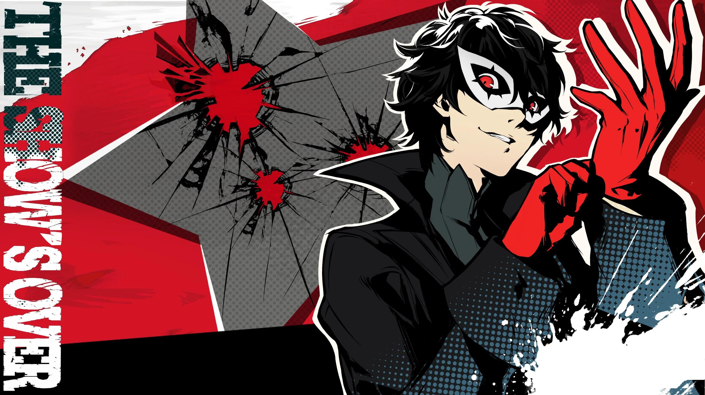

Persona 5 Royal Review
The Switch's Newest Persona is Looking Cool

Hoo boy, what can I say? RPGS aren't a genre that's for everyone, but I believe the Persona series has always been a series that does its best to change that. As you can see from the screenshot, this game is very flashy and it constantly stays that way throughout, which did a surprising amount to always help keep me engagaed. Unlike other RPGs it's usually not too battle-centric and instead, puts the "role-playing" in RPG and simply hanging out with a nice cast of characters is a way to get stronger.
Unlike a lot of other RPGS, most of the time this game is extremely grounded, taking place in Shibuya, A High School student is rehabilitated there after being falsely accused for stopping an assault. While living his normal life he runs into a mysterious world called the Metaverse, made up of corrupt desires. Figuring out how he summon these monsters called Personas and that he use them to change the hearts of the corrupt for good while in there, he forms the Phantom Theives and sets of to change the hearts of all of the wicked while moonlighting his daily life. It's because of this set-up that the game explores everyday life and problems that aren't too unusual in this day and age, like abuse.
Not Just Battling
This is where the game truely seperates itself from the crowd, rather than battling and traversing an overworld, most of the game is spent managing your time doing daily activities in the "real" world before your next required traditional RPG gameplay- a Metaverse heist. Whether it's hanging out with friends, working a job, working out, or stopping to learn, everything you do will have some way to upgrade you or your Personas. If that's not your style, you can go in the Metaverse anyways and level yourself up the good old fashioned way, letting you be in charge of your playstyle and try to reap the benefits of both if wanted.
Personas, Personas, Personas

This is important as the game's battle system heavily encourages you to have as many Personas types as possible, of course, as strong as possible. Persona's battke system is all about trying knock out all of the enemies by attacking with their weaknesses to get more turns- and more importantly, super attacks: an All-Out Attack. This is not a very complex process, making it perfect for beginners.
Verdict
I consider this to be an all around solid game, and a game I'd especially recommend to anyone looking to dip their toes in the RPG genre. I don't have any inherent critisms against the game, but I will say that that the Switch version doesn't perform as well as it does in pretty much any other console-the price to pay for portability.